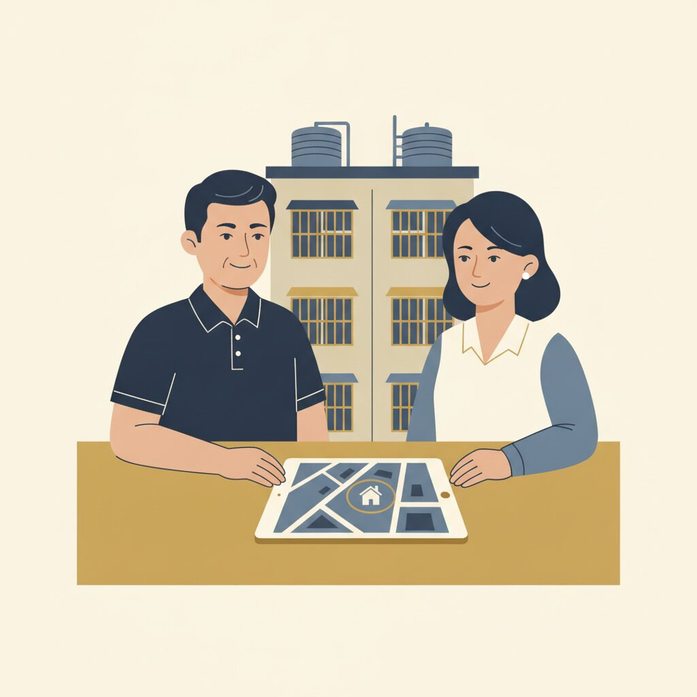
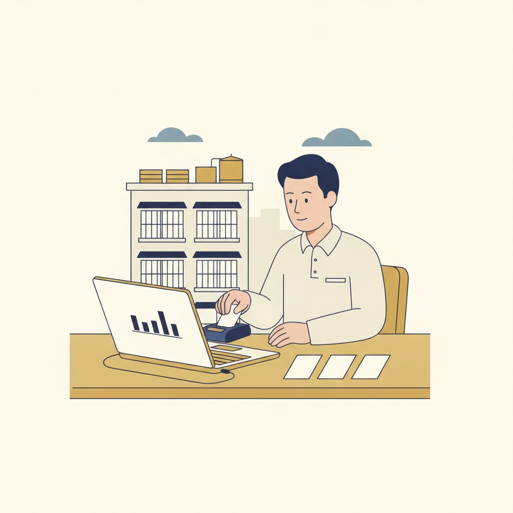
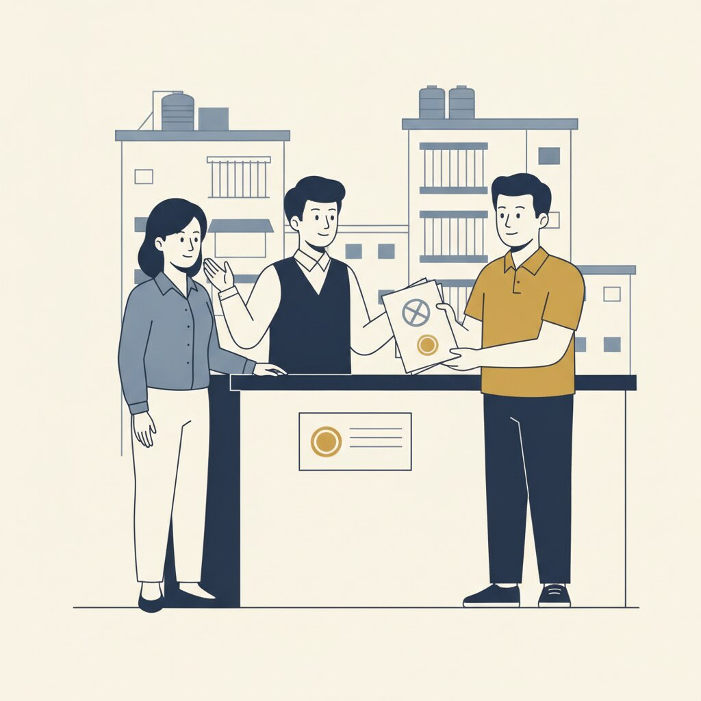
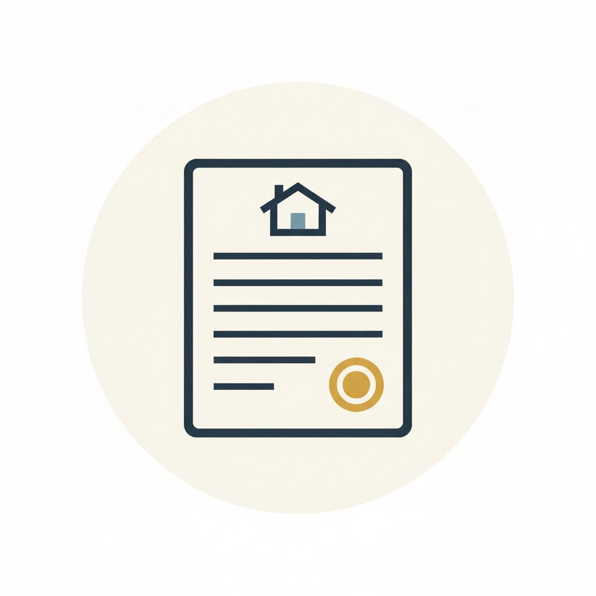
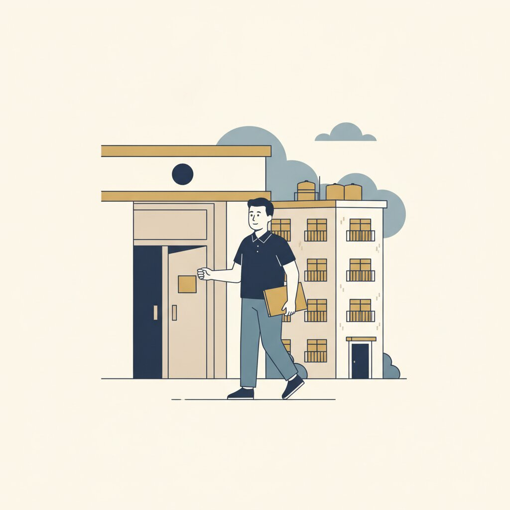

X 先生找我們做房貸諮詢。名下一間房，上面一筆民間設定，月息三分：每月 3%，年化 36%。每月繳的全是利息，本金不動。他要利息降、額度多一點。

實價登錄加周邊 500 公尺成交行情，看這間房子的擔保空間。

算負債比。經他同意，由他本人用自然人憑證調出勞保與所得明細，確認工作與月收入。
三樣都過，才聯繫合作的民間資金方送件。第一天資料審過，當天聯繫原設定人談清償。

新資金方在銀行開好本行支票（銀行自己簽發，不是個人開的票），原設定人打電話到開票銀行照會。塗銷舊抵押權、設定新抵押權連件送進地政。三十分鐘後塗銷完成。

三十分鐘、兩天，都是地政作業時間，不是誰特別快。

約在銀行撥款，換約完成。
年化從 36% 降到 12%（月息一分）。額度依房價與收入重估，比原本多。民法第 205 條規定，約定利率超過週年 16% 的部分，約定無效（2021 年 7 月 20 日施行）；月息三分年化 36%，早就超過了。利息先降、繳款正常之後，下一步再評估轉銀行。
做不到這三件事的資金方，不要簽。
鋮馨不是銀行、不是金融機構、不出資。我們估價、算負債比、核實收入、媒合資金方、協調地政與撥款。本案是單一實際案例，已去識別化；民間資金方的利率與額度依個案不動產、負債比與收入而定，本案利率為當時條件，不是通案。不申請不收費，面談不收費。
LINE 加 → https://lin.ee/PHIfSoY
電話 → 02-2249-0517 / 0958-139-786
新北市中和區中正路 468 號
不申請不收費，面談不收費。